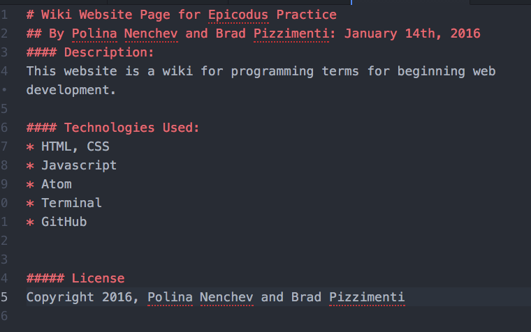

Here is an example of a README file using markdown.
Markdown is a text-to-HTML conversion tool for web writers. Markdown allows you to write using an easy-to-read, easy-to-write plain text format, then convert it to structurally valid XHTML (or HTML).Thus, “Markdown” is two things: (1) a plain text formatting syntax; and (2) a software tool, written in Perl, that converts the plain text formatting to HTML. See the Syntax page for details pertaining to Markdown’s formatting syntax. You can try it out, right now, using the online Dingus. --Daring Fireball Just like Chrome is a way to turn HTML code into webpages, Dillinger is a way to turn Markdown into webpages. It is easy to use for people to learn to write Markdown.